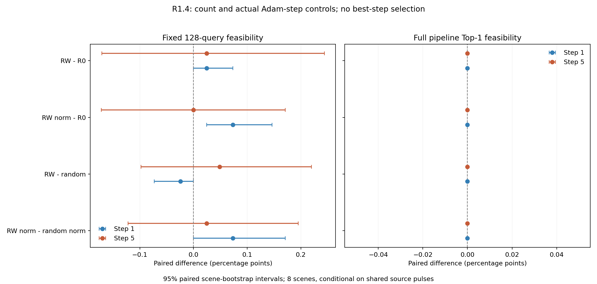

方法开发：HOLD。等量、等实际步长控制后的两个预登记步数区间均包含0；当前证据不足以确认零质量宽度监督造成可纠正的实际损害，不支持据此进入短程训练。本轮仅完成已授权的 R1.4，未启动短程训练。
关键结果：第5步，RW相对R0仅 +0.02 pp [-0.17, +0.24]；实际Adam步长匹配后为 +0.00 pp [-0.17, +0.17]；相对等量且步长匹配的随机控制为 +0.02 pp [-0.12, +0.20]。第1步步长匹配RW相对R0有微弱正差，但对随机控制及来源依赖敏感性区间均包含0，第5步不保持；不能据此认定存在稳定且特异的有害监督效应。完整筛选的Top-1没有处理臂相对R0的收益。
8 个来源批次、7 条件、每分支同一轨迹第 1/5 步；两折交叉留出，每个来源在对侧 4 场景的帧128评价。共 448 / 448 个预登记来源—条件—步数—场景组合。固定池有 8×128＝1024 个唯一基础查询，原检查点可行 528；同一查询在不同微更新下反复评价，不能当成新增独立样本。
直接评价实际新姿态，可行标准保持0<μ≤0.4且无碰撞、无空夹；没有用最近离散GT质量代替。效应为可行率差，单位百分点；方括号为场景配对 bootstrap 95%区间。先在每留出场景平均4个来源脉冲，再将8个场景等权；两个步数均保留，不挑选最佳步数。完整均衡设计下，主结果按来源等权的均值与按场景等权均值相同；逐来源效应与两折方向另保留，不能把32个来源—场景组合称为32个独立场景。
| 处理 − 对照 | 步数 | 差值 [场景95%区间] | 两折均值 pp | 来源×场景重采样区间 pp |
|---|---|---|---|---|
| RW 移除零质量宽度梯度 − R0 原监督 | 1 | +0.02 pp [+0.00, +0.07] | +0.00 / +0.05 | [+0.00, +0.10] |
| RW 移除零质量宽度梯度 − R0 原监督 | 5 | +0.02 pp [-0.17, +0.24] | -0.05 / +0.10 | [-0.24, +0.29] |
| RW＋Adam步长匹配 − R0 原监督 | 1 | +0.07 pp [+0.02, +0.15] | +0.05 / +0.10 | [+0.00, +0.22] |
| RW＋Adam步长匹配 − R0 原监督 | 5 | +0.00 pp [-0.17, +0.17] | -0.05 / +0.05 | [-0.22, +0.22] |
| RW 移除零质量宽度梯度 − 随机等量移除 | 1 | -0.02 pp [-0.07, +0.00] | -0.05 / +0.00 | [-0.10, +0.00] |
| RW 移除零质量宽度梯度 − 随机等量移除 | 5 | +0.05 pp [-0.10, +0.22] | +0.00 / +0.10 | [-0.20, +0.32] |
| RW＋Adam步长匹配 − 随机等量＋步长匹配 | 1 | +0.07 pp [+0.00, +0.17] | +0.05 / +0.10 | [+0.00, +0.22] |
| RW＋Adam步长匹配 − 随机等量＋步长匹配 | 5 | +0.02 pp [-0.12, +0.20] | -0.10 / +0.15 | [-0.17, +0.24] |

随机等量控制在物体slot×原分数四分位内抽样，允许包含q0。8个来源中随机掩码与q0掩码累计重叠 1473/1814（81.2%），逐来源重叠范围 72.1%–86.4%。因此它是数量与分层分布控制，并非与q0互斥的反事实；高重叠会减小两种干预的区别。此处只描述设计，不据此事后更换随机控制。
| 处理 − 对照 | 步数 | 可行率差 [95%区间] |
|---|---|---|
| RWlocal 仅末层保留 − R0 原监督 | 1 | +0.02 pp [+0.00, +0.07] |
| RWlocal 仅末层保留 − R0 原监督 | 5 | +0.05 pp [-0.07, +0.17] |
| RWlocal＋步长匹配 − R0 原监督 | 1 | +0.05 pp [+0.00, +0.12] |
| RWlocal＋步长匹配 − R0 原监督 | 5 | +0.00 pp [-0.15, +0.12] |
| RW 移除零质量宽度梯度 − RWlocal 仅末层保留 | 1 | +0.00 pp [+0.00, +0.00] |
| RW 移除零质量宽度梯度 − RWlocal 仅末层保留 | 5 | -0.02 pp [-0.10, +0.05] |
| RW＋Adam步长匹配 − RWlocal＋步长匹配 | 1 | +0.02 pp [+0.00, +0.07] |
| RW＋Adam步长匹配 − RWlocal＋步长匹配 | 5 | +0.00 pp [-0.07, +0.07] |
| 随机等量移除 − R0 原监督 | 1 | +0.05 pp [+0.00, +0.12] |
| 随机等量移除 − R0 原监督 | 5 | -0.02 pp [-0.12, +0.07] |
| 随机等量＋步长匹配 − R0 原监督 | 1 | +0.00 pp [-0.10, +0.10] |
| 随机等量＋步长匹配 − R0 原监督 | 5 | -0.02 pp [-0.12, +0.07] |
下表为32个来源—留出场景组合累计候选事件，不是独立样本数；同一留出查询重复4次。必须同时看恢复和损害，净变化的区间以上述场景统计为准。
| 条件 | 步数 | 参考 | 恢复 | 损害 | 可比候选事件 |
|---|---|---|---|---|---|
| R0 原监督 | 1 | 原检查点 | 18 | 29 | 4096 |
| R0 原监督 | 1 | 同来源同step R0 | 0 | 0 | 4096 |
| R0 原监督 | 5 | 原检查点 | 88 | 130 | 4096 |
| R0 原监督 | 5 | 同来源同step R0 | 0 | 0 | 4096 |
| RW 移除零质量宽度梯度 | 1 | 原检查点 | 18 | 28 | 4096 |
| RW 移除零质量宽度梯度 | 1 | 同来源同step R0 | 1 | 0 | 4096 |
| RW 移除零质量宽度梯度 | 5 | 原检查点 | 87 | 128 | 4096 |
| RW 移除零质量宽度梯度 | 5 | 同来源同step R0 | 8 | 7 | 4096 |
| RWlocal 仅末层保留 | 1 | 原检查点 | 18 | 28 | 4096 |
| RWlocal 仅末层保留 | 1 | 同来源同step R0 | 1 | 0 | 4096 |
| RWlocal 仅末层保留 | 5 | 原检查点 | 88 | 128 | 4096 |
| RWlocal 仅末层保留 | 5 | 同来源同step R0 | 7 | 5 | 4096 |
| 随机等量移除 | 1 | 原检查点 | 19 | 28 | 4096 |
| 随机等量移除 | 1 | 同来源同step R0 | 2 | 0 | 4096 |
| 随机等量移除 | 5 | 原检查点 | 85 | 128 | 4096 |
| 随机等量移除 | 5 | 同来源同step R0 | 3 | 4 | 4096 |
| RW＋Adam步长匹配 | 1 | 原检查点 | 19 | 27 | 4096 |
| RW＋Adam步长匹配 | 1 | 同来源同step R0 | 3 | 0 | 4096 |
| RW＋Adam步长匹配 | 5 | 原检查点 | 85 | 127 | 4096 |
| RW＋Adam步长匹配 | 5 | 同来源同step R0 | 6 | 6 | 4096 |
| RWlocal＋步长匹配 | 1 | 原检查点 | 19 | 28 | 4096 |
| RWlocal＋步长匹配 | 1 | 同来源同step R0 | 2 | 0 | 4096 |
| RWlocal＋步长匹配 | 5 | 原检查点 | 86 | 128 | 4096 |
| RWlocal＋步长匹配 | 5 | 同来源同step R0 | 5 | 5 | 4096 |
| 随机等量＋步长匹配 | 1 | 原检查点 | 19 | 30 | 4096 |
| 随机等量＋步长匹配 | 1 | 同来源同step R0 | 2 | 2 | 4096 |
| 随机等量＋步长匹配 | 5 | 原检查点 | 87 | 130 | 4096 |
| 随机等量＋步长匹配 | 5 | 同来源同step R0 | 3 | 4 | 4096 |
所有1024个冻结位置／方向候选进入官方碰撞、NMS、每物体Top-10、最终Top-50。G0/G1为原／新几何，S0/S1为原／新分数；这里报告最终Top-1可行率，和固定池可行率分开。没有候选的帧Top-1记失败，未知评价不记失败。最终池长度、可行数量、至少一可行和可行比例见逐帧表。
| 条件 | 步数 | G0S0 | G1S0 | G0S1 | G1S1 |
|---|---|---|---|---|---|
| R0 原监督 | 1 | 62.50% | 59.38% | 68.75% | 65.62% |
| R0 原监督 | 5 | 62.50% | 65.62% | 56.25% | 65.62% |
| RW 移除零质量宽度梯度 | 1 | 62.50% | 59.38% | 68.75% | 65.62% |
| RW 移除零质量宽度梯度 | 5 | 62.50% | 65.62% | 56.25% | 65.62% |
| RWlocal 仅末层保留 | 1 | 62.50% | 59.38% | 68.75% | 65.62% |
| RWlocal 仅末层保留 | 5 | 62.50% | 65.62% | 56.25% | 65.62% |
| 随机等量移除 | 1 | 62.50% | 59.38% | 68.75% | 65.62% |
| 随机等量移除 | 5 | 62.50% | 65.62% | 56.25% | 65.62% |
| RW＋Adam步长匹配 | 1 | 62.50% | 59.38% | 68.75% | 65.62% |
| RW＋Adam步长匹配 | 5 | 62.50% | 65.62% | 56.25% | 65.62% |
| RWlocal＋步长匹配 | 1 | 62.50% | 59.38% | 68.75% | 65.62% |
| RWlocal＋步长匹配 | 5 | 62.50% | 65.62% | 56.25% | 65.62% |
| 随机等量＋步长匹配 | 1 | 62.50% | 59.38% | 68.75% | 65.62% |
| 随机等量＋步长匹配 | 5 | 62.50% | 65.62% | 56.25% | 65.62% |
| 完整流水Top-1处理 − 对照 | 步数 | 差值 [95%区间] |
|---|---|---|
| RW 移除零质量宽度梯度 − R0 原监督 | 1 | +0.00 pp [+0.00, +0.00] |
| RW 移除零质量宽度梯度 − R0 原监督 | 5 | +0.00 pp [+0.00, +0.00] |
| RW＋Adam步长匹配 − R0 原监督 | 1 | +0.00 pp [+0.00, +0.00] |
| RW＋Adam步长匹配 − R0 原监督 | 5 | +0.00 pp [+0.00, +0.00] |
| RW 移除零质量宽度梯度 − 随机等量移除 | 1 | +0.00 pp [+0.00, +0.00] |
| RW 移除零质量宽度梯度 − 随机等量移除 | 5 | +0.00 pp [+0.00, +0.00] |
| RW＋Adam步长匹配 − 随机等量＋步长匹配 | 1 | +0.00 pp [+0.00, +0.00] |
| RW＋Adam步长匹配 − 随机等量＋步长匹配 | 5 | +0.00 pp [+0.00, +0.00] |
Top-1配对区间[0,0]来自当前观测样本的处理／对照结果完全相同，导致经验bootstrap区间退化；不代表总体效应或总体不确定性严格为零。
同物体可行—失败候选对中，失败分数高于可行分数为一次倒序，平局记半次。四种几何／分数组合用相同已知查询交集；先物体等权再来源、场景等权。该诊断不是AP，也不能把新几何改变后的标签变化混为纯评分改善。
| 条件 | 步数 | G0S0倒序 | G0S1倒序 | G1S0倒序 | G1S1倒序 |
|---|---|---|---|---|---|
| R0 原监督 | 1 | 29.36% | 29.54% | 29.71% | 29.88% |
| R0 原监督 | 5 | 29.36% | 29.46% | 31.03% | 30.83% |
| RW 移除零质量宽度梯度 | 1 | 29.36% | 29.54% | 29.73% | 29.90% |
| RW 移除零质量宽度梯度 | 5 | 29.36% | 29.49% | 30.61% | 30.45% |
| RWlocal 仅末层保留 | 1 | 29.36% | 29.54% | 29.73% | 29.90% |
| RWlocal 仅末层保留 | 5 | 29.36% | 29.50% | 30.74% | 30.58% |
| 随机等量移除 | 1 | 29.36% | 29.56% | 29.74% | 29.93% |
| 随机等量移除 | 5 | 29.36% | 29.49% | 30.83% | 30.67% |
| RW＋Adam步长匹配 | 1 | 29.36% | 29.55% | 29.78% | 29.97% |
| RW＋Adam步长匹配 | 5 | 29.36% | 29.50% | 30.65% | 30.51% |
| RWlocal＋步长匹配 | 1 | 29.36% | 29.54% | 29.74% | 29.92% |
| RWlocal＋步长匹配 | 5 | 29.36% | 29.51% | 30.75% | 30.64% |
| 随机等量＋步长匹配 | 1 | 29.36% | 29.54% | 29.71% | 29.88% |
| 随机等量＋步长匹配 | 5 | 29.36% | 29.49% | 30.79% | 30.64% |
| 条件 | 步数 | 来源数 | 训练loss | q+ logit漂移 | 宽度上界饱和 | A / D变化数 | 实际参数步长L2 | 缩放系数 |
|---|---|---|---|---|---|---|---|---|
| R0 原监督 | 1 | 8 | 2.8975 | 0 | 13.77% | 0 / 0 | 0.030111 | 1 |
| R0 原监督 | 5 | 8 | 2.7994 | 0.24004 | 13.51% | 63.25 / 45.125 | 0.073643 | 1 |
| RW 移除零质量宽度梯度 | 1 | 8 | 2.8975 | 0 | 13.77% | 0 / 0 | 0.029454 | 1 |
| RW 移除零质量宽度梯度 | 5 | 8 | 2.8063 | 0.24012 | 13.59% | 63.125 / 44.75 | 0.070608 | 1 |
| RWlocal 仅末层保留 | 1 | 8 | 2.8975 | 0 | 13.77% | 0 / 0 | 0.029454 | 1 |
| RWlocal 仅末层保留 | 5 | 8 | 2.8063 | 0.24012 | 13.56% | 63.125 / 44.75 | 0.07061 | 1 |
| 随机等量移除 | 1 | 8 | 2.8975 | 0 | 13.77% | 0 / 0 | 0.029373 | 1 |
| 随机等量移除 | 5 | 8 | 2.8062 | 0.23926 | 13.53% | 63.375 / 44.375 | 0.070611 | 1 |
| RW＋Adam步长匹配 | 1 | 8 | 2.8975 | 0 | 13.77% | 0 / 0 | 0.030111 | 1.023 |
| RW＋Adam步长匹配 | 5 | 8 | 2.8036 | 0.2414 | 13.59% | 63.25 / 44.5 | 0.073643 | 1.0484 |
| RWlocal＋步长匹配 | 1 | 8 | 2.8975 | 0 | 13.77% | 0 / 0 | 0.030111 | 1.023 |
| RWlocal＋步长匹配 | 5 | 8 | 2.8035 | 0.2414 | 13.56% | 63.25 / 44.5 | 0.073643 | 1.0484 |
| 随机等量＋步长匹配 | 1 | 8 | 2.8975 | 0 | 13.77% | 0 / 0 | 0.030111 | 1.0254 |
| 随机等量＋步长匹配 | 5 | 8 | 2.8032 | 0.24062 | 13.50% | 63.75 / 44.625 | 0.073643 | 1.0475 |
训练损失、q+分数漂移、宽度饱和、AD变化和逐步实际Adam更新范数保留在 training_steps.csv；训练状态来自该步更新前forward（第1步对应原参数、第5步对应4次更新后），而留出评价来自第1/5步完成后的参数。留出预测变化见 prediction_drift.csv。训练损失下降不等于留出抓取质量改善；实际步长匹配控制使用训练批次计算，未以留出结果调节。
训练态 FP32 稀疏骨干在恢复参数、BN与随机状态后仍有微小数值非确定性；独立原生重复和原生→冻结查询路径均出现约2–3×10⁻⁵的logit差异，而复用同一次骨干输出时，下游路径差异为0。因此，第1步使用每来源同一个真实原生全网计算图，求总损失、零质量宽度和随机等量宽度的三组梯度，七臂各自从原参数与Adam状态执行更新，BN／RNG起点相同；第2–5步各臂重新计算完整骨干并反向传播。这不是冻结训练特征，也没有增加Adam更新次数。训练态BN／dropout始终开启；相对原检查点的变化含共同适应及BN效应，因此机制判断必须依赖处理臂−R0及随机／步长控制。
原3×10⁻⁵历史raw-logit阈值保持不变，超阈值记录仍记失败。场景64首次深度logit差4.5776367×10⁻⁵，首次图未保留；在澄清规则后仅重建一次共同初始图，第二次差异3.6239624×10⁻⁵也保留为历史检查失败，不是复用首次图，也不是反复尝试直至通过。必须透明说明：在来源2的35次更新完成、其余来源尚未更新时，历史数值对照被澄清为复演审计，而非排除科学来源批次的条件。七臂共同起点严格相同、同骨干下游严格相同、历史完整及解码后AD类别不变、点／方向／标签一致，以及留出原TF32姿态完全一致作为实验不变量；原可行性阈值、条件和预算不变。数值复演问题本身不是监督机制结果。
详细记录：首次更新前实施说明、剩余来源更新前历史检查澄清、来源2／其余来源的代码版本与哈希及各来源preflight凭据。
独立凭据核验通过：56分支、280次Adam更新；24条步长匹配分支共120步，实际参数步长最大相对偏差 6e-06，第1步七臂logit最大差异 0.0。模型及buffer共同起点、梯度范围、固定分母与RNG检查通过，无未完成journal。详见执行凭据核验。
重复出现的未知标签计数为 0；未知不作为负例。正式逐姿态评价 62173 次，加初始一致性预检 8 次，共 62181 次，低于131,072次上限，并与原始执行账本核对一致。原始检查点固定查询标签跨条件严格一致，查询ID和两折隔离已核验。每个条件恢复相同模型、Adam状态和随机数；详细执行不变量见receipts。
只含8个训练场景，官方完整训练检查点已经见过这些训练场景；两折留出仅指本次微更新没有使用对侧场景，不是从未见过的泛化测试。每折4个留出场景共享同4个来源脉冲，普通场景区间有条件依赖；并列报告来源×场景重采样敏感性，但只有两折，仍不能代表广泛泛化。候选、条件和1/5步不作为独立重复，多项对照为机制诊断、未作显著性筛选。1/5步局部结果不能否定长期效应，也不能代替长期受控训练。解析可行性不是机器人成功率。
未新增评分器、网络或标签修正；未访问C3/C4/C5，未执行1000步短训，未提交Git。后续任何确认训练都需要新的决定与授权。